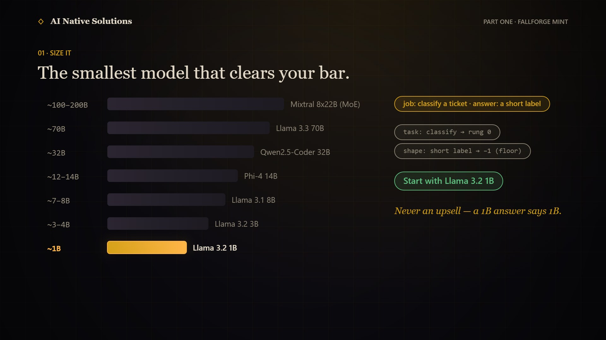
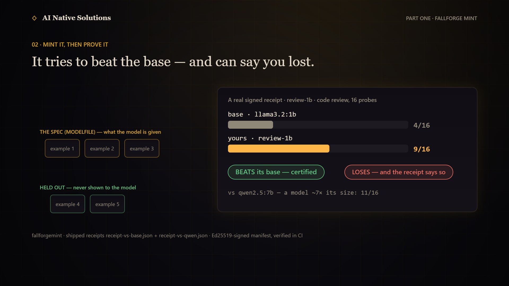
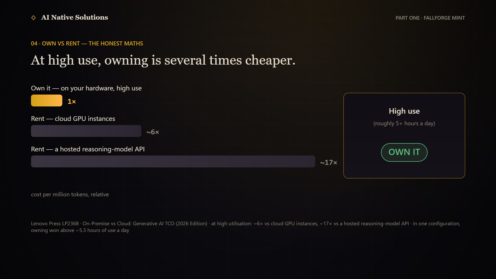
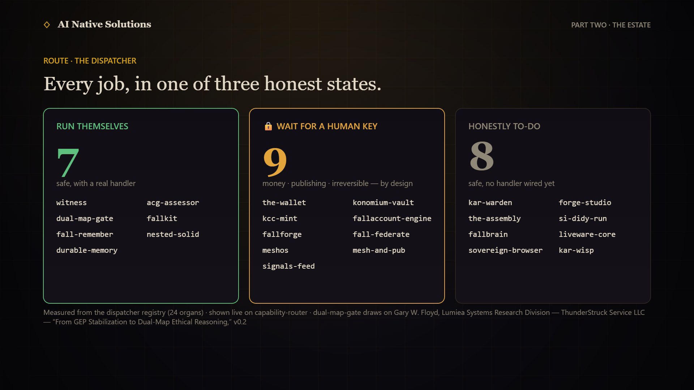

fall-os
A set of AI tools that you own. They run on computers you already have. One part runs the rest, and you tell it what to do in plain words.
00What is new
Two things are new. FallForge Mint helps you make a small AI of your own, and then tests it. Its scorecard is allowed to say you lost. And everything we built now joins up: one front door, seven steps, and a sorter that puts each job in one of three honest piles.
1 · Pick the size
Sellers want to sell you a big AI, or a place to run one. The real question is what size is enough. The sizer looks at the kind of work, the kind of answer, how strict it must be and where it will run. Then it names the smallest open AI that should pass. It can pick from about 1 billion to about 200 billion in size, from the Llama, Qwen, Phi, Gemma and Mistral families. It shows every reason. For a job that sorts things into short labels it picks Llama 3.2 1B (~1B). For strict coding on a computer with a strong graphics chip it picks Llama 3.3 70B (~70B). It never picks a bigger one just to sell more. It is a clear place to start, not a test result. The proof is the scorecard.

2 · Make it, then test it
A few of your own examples become the recipe for a small AI. The recipe is yours, and it can be made again the same way. Some examples are kept back for the test. The new AI and the one it grew from both answer them. A fixed program marks the answers, the same way every time. Here is a real signed scorecard from our own work. review-1b, which checks code, scored 9/16. The AI it grew from, llama3.2:1b, scored 4/16. The verdict is BEATS, certified. Against qwen2.5:7b, an AI about seven times its size, it scored 9/16 to 11/16. The verdict is LOSES, and the scorecard says so.

The exact words, for experts
It names its key class — software Ed25519, which proves the numbers are unedited since signing, not who ran the evaluation. Its held-out claim is narrow and true: “The held-out answers were not in the spec given to the model (hash-disjoint); anyone can re-run it.” It makes no claim that the grader was isolated from the answers. Anyone can now re-run a shared scorecard on a clean GitHub runner with the CI re-run rail: it recomputes every recorded number, checks that the CI run a scorecard names really made that exact scorecard, rebuilds the model with Ollama, runs the held-out set again, and fails the job on any mismatch.
3 · What owning saves, and when it does not
A 2026 study by Lenovo compared owning the computers with renting them. With heavy use, owning cost about 6 times less than rented cloud computers. It cost about 17 times less than a paid AI service. It paid for itself in about 5.2 months, set against cloud computers rented by the hour. Below about 5 hours of use a day, renting can win. FallForge Mint has a calculator that works this out for your own use. When renting is the better deal, it says “keep renting”.

The study, in its own terms
At high utilisation, owning inference ran ~6× cheaper per million tokens than cloud GPU instances and ~17× cheaper than a hosted reasoning-model API; breakeven ~5.2 months against on-demand cloud. Below roughly 5 hours a day of use, renting can win. (Lenovo Press LP2368, “On-Premise vs Cloud: Generative AI Total Cost of Ownership (2026 Edition)”, 24 July 2026.)
4 · How it all joins up
sovereign-foundry is the front door. It has seven steps: Prove · Own · Shape · Carry · Remember · Run · Connect. Each step is a live page. fall-os lets you hatch your own helper and grow it into your own system. capability-router gives each job one of 127 places to go, and checks that none is missed. A sorter then puts each step in one of three honest piles. 7 parts run on their own. 9 wait for a person, on purpose: that is anything that moves money, goes public, or cannot be undone. 8 are marked as not built yet. fall-federate /join links two people with no server in the middle. meshos passes messages across three devices. forgegrowth turns a real scorecard into launch words, and refuses any number that is not on it.


5 · Each number, and where it is from
Each number in this part was measured on a live build, or comes from a study we name.
Open the table: each number and its source
| What | Figure | Source |
|---|---|---|
| FallForge Mint kernel — mutation gate | 376 / 377 killed · 0 survivors (1 equivalent mutant baselined with a written reason) · score 0.997 | measured, commit a8923da |
| A real signed receipt — review-1b vs its base | 9/16 vs 4/16 → BEATS | measured, shipped receipt |
| review-1b vs qwen2.5:7b | 9/16 vs 11/16 → LOSES | measured — the receipt says it lost |
| Fold-cycle — prefill latency cut | ~95% (control 0%) | measured, kar-foldcycle |
| Fold-cycle — embedding calls avoided | ~67% | measured, kar-foldcycle |
| capability-router | 127 addresses · witness 1.0 (22/22 mutants killed) | measured |
| The dispatcher | 7 auto · 9 behind a human key · 8 to-do (of 24) | measured from the registry |
| witness on left-pad (not ours) | 5 / 6 killed · 1 survivor | measured — The published green suite does not pin one line — the witness gate found it. |
| Own vs rent | ~6–17× cheaper to own at high use — renting wins below it | cited — Lenovo Press LP2368, “On-Premise vs Cloud: Generative AI Total Cost of Ownership (2026 Edition)”, 24 July 2026 |
| Small models for agentic work | sufficient, suitable, economical | cited — Belcak et al., NVIDIA Research, “Small Language Models are the Future of Agentic AI”, arXiv:2506.02153, June 2025 |
| Model collapse | the tails disappear first | cited — Shumailov et al., “The Curse of Recursion: Training on Generated Data Makes Models Forget”, arXiv:2305.17493 (Nature, 2024) |
| The estate | 1,700+ public repositories | counted — GitHub API, org sjgant80-hub, public repos counted 2026-09-28 (gh api --paginate) |
6 · The big idea
A team at NVIDIA wrote that small AI models are strong enough for many jobs, suit them better, and cost less. Owning them costs several times less with heavy use, and renting wins with light use. Another study found that an AI trained on AI-made text slowly loses the rare things. Our view, and it is only ours: an AI fed on its own answers forgets the rare cases. Real people doing real work are those rare cases. Owned AI that you can test is how they are kept. A scorecard that can fail is how anyone can trust it.
The studies, and our view, in the first words
Small models are “sufficiently powerful, inherently more suitable, and necessarily more economical for many invocations in agentic systems” (Belcak et al., NVIDIA Research, “Small Language Models are the Future of Agentic AI”, arXiv:2506.02153, June 2025). Training on model-generated content causes irreversible defects “where tails of the original content distribution disappear” (Shumailov et al., “The Curse of Recursion: Training on Generated Data Makes Models Forget”, arXiv:2305.17493 (Nature, 2024)). Our thesis, stated as ours: As models train on their own output they lose the tails of the distribution. A mesh of real people doing real work is the tails — the clean signal a monolith averages away. Owned, provable models are how that signal is kept, and a receipt that can fail is how anyone trusts it.
7 · What works, what needs a person, what is next
| Works now | Proved, but needs a person | Next |
|---|---|---|
| fallforgemint (launched, v1.0.0) + the sizer + the CI re-run rail fall-os capability-router fall-federate /join sovereign-foundry forgegrowth meshos kar-foldcycle | fall-federate across two different machines (needs a second human) witness in one external team's CI (needs a willing maintainer) | the marketplace of pre-minted, proven models |
01Why we built it
Software is getting cheap to make. Soon a working tool can be asked for and made on the spot. Then the code is not the rare thing. Two things are rare: proof that it works, and owning the system it runs in.
Most software firms bet the other way. They say software costs a lot to make, so you must rent it, per person, for ever. The seller also keeps your data, and bills you each time the AI reads it. That bet is failing. fall-os is built for what comes next: a system you own, running your own AI, on your own files, with a test behind every build.
02How it is built
One core. Every tool calls the same small routine. It lays out the choices, and spreads them so they do not bunch up. It scores them against one shared pass mark. It picks on purpose. It keeps the answer, so the same work is never done twice.
One conductor. One loop runs the work: explore, settle, check, build, remember. Tools are called by the loop. They do not run loose. A new conductor starts blank. You add tools and sign it with your own name, and it becomes yours.
Many tools. We call them organs. Each one plugs into the core. None carries its own copy of the choosing. So make the core better once, and every tool gets better at the same time. And any two tools work together with no project to join them up.
One standard for all of it
The design is Konomi, created by Thomas Frumkin. Konomi packs the big factory standards into one format that a computer can read. They are ISA-95, ISA-88, ISA-101, ISA-18.2, OPC-UA, MQTT Sparkplug and Modbus. It also maps each one to the others. Its other half is konomigami: seven folds over a flat sheet, matched to seven levels of a factory, L0 to L6. So one set of rules can describe a sensor on a machine and a company's books. That is why tools built this way fit together.
03It runs in a browser tab
This is a firm rule, not a short cut. A tool is one file that you open. There is no installer, no server and no account. That is why a hundred tools cost nothing to hand out. It is also why you can truly own them: a tool that never needed a server has no server holding your data.
- Real locks and keys in the page. The page can sign things and check signatures. So names, and records that show if they were changed, work with nothing behind them.
- Device to device. Your devices sync with each other, not through a seller. This is built on Konomi peer-to-peer.
- Fast work in the tab. Heavy sums and search run on your own computer. No one bills you for them.
- Works with the network off. The tab stores its own data and keeps working.
- Live sound. It can test a thing by the way it rings. It can turn a system's health into sound. It can pass work between computers as sound.
04Your AI, not a seller's
Each request goes to the cheapest part that can handle it. Easy work is done by plain rules, or by an AI on your own computer. That costs nothing extra. A paid AI is used only when you allow it. Then your key goes straight to that firm, with no one in between.
| Level | Runs on | Your say |
|---|---|---|
| Built-in rules | the device | no AI needed |
| AI in the browser | the device | nothing to install |
| AI on your own computer | your computer | your hardware |
| Big AI on your own rig | your rig | your hardware |
| Free outside AI | outside | only if you say yes |
| Top outside AI | outside | only if you say yes |
The safety is built in. A request cannot reach a level you have not allowed, because the outside firm is never called. So your words never leave. If no allowed level can answer, it tells you so. It does not quietly go up a level.
05A memory that gets better
Most AI systems bolt a search box onto the AI. For each question they fetch bits of text that look alike. It never gets sharper. And it brings a bill that never ends, for storing and sorting it all.
Here, memory is filed by what it says and linked by meaning. While the system rests, it tidies up. Copies are merged. Facts that follow from other facts are written down. Rules are drawn from examples. When two things clash, the one with more proof wins, not the newer one. The memory gets better with no new training. Finding a fact is a short walk along the links.
Measured: we gave it one day of memories and let it tidy once. Its score on our questions went from 2 of 4 to 4 of 4. The AI itself was not changed. It built a rule (“birds fly”) from three examples, and that rule was in no single memory. It worked out a fact that followed from two others. An answer with proof beat a later, noisier one. A known exception always beats the rule.
06Proof is the thing of worth
Anyone can make code that looks right. The thing of lasting worth is proof that it is right, which anyone can check without trusting the maker. Our test changes one small thing in the code at a time. The code's own tests must notice the change. Tests that cannot spot broken code do not count as a pass.
What that catches, measured
We ran it on code that had already passed four rounds of checking by AI. It scored 0.55: nine of twenty planted changes went unseen. It found an edge case with no test, which every AI check had missed. It took about eighteen seconds, and it gives the same result each time. Each AI check had used about 1.5 million AI word-pieces.
That is the case in one line: a fixed test is faster, cheaper and stricter than asking an AI to review. It gives the same verdict every time.
Two more things sit on top of the test. One is a fixed marking sheet for how code is built. The other is a way to earn a name by doing. Skill is shown on a fixed piece of work and marked by a fixed marker. So a claim that someone marked for themselves fails when it is marked again.
07Safety and limits that are built in
Most AI trials stall because no one can put firm limits on the AI. Here the limits are part of the system.
- An AI worker cannot overspend. Its signed name is also its permit and its budget. It cannot spend more than it holds. We built this after a real mistake, when a job with no limit used 2.2 million AI word-pieces. Now that mistake cannot happen.
- Nothing is done without a yes. The conductor gets things ready and suggests. A person makes the choice.
- It will not bluff. On law or money, the tools say only what they can check. They flag what they cannot. They point you to free human help.
- Four separate checks. Built right, proved by test, alive, and within budget.
- Who did what is signed. Work and pay are written to a record that shows any change. They settle on the onlybrains base. So what an AI worker did and earned can be proved.
08What we measured
Here are some results from our own tests. Each can be run again from its public project.
| Build | What we claimed | What we measured |
|---|---|---|
| Even spread | One rule that spreads things out with no bunching, in four kinds of job | load unevenness 0.32 vs 0.93; key spread 351× tighter; 2D spacing 12×; peak load halved |
| Health by ear | A fault across several readings can be heard while each reading still looks fine | 3 readings at 75% of the danger line: 0 alarms, 0.96 clash in the sound; a leak heard 42 ticks before the alarm |
| Testing by tap | Tell a sound part from a cracked one with one tap, by its ring alone | 96% absolute / 100% relative at telling them apart; ring quality ~850 vs ~70 |
| Overnight tidy-up | Memory that acts like learning, with no new training | 2/4 → 4/4 right, the AI unchanged |
| Guard against copying bots | A page opens only after real work by the visitor's computer | ~30 ms for a person; ~16 computer-days for a bot copying 50M pages |
| Computing with no network | Computers share work with no network at all | 0 of 10 network parts found in the code; work sent as real sound and read back exactly |
| Money between AI workers | Value moves only by signed transfer, and is earned only by checked work | fake and changed transfers refused; nothing spent twice; totals held under heavy use |
09What it runs on
There is no smallest spend to start. Each step up keeps more of the work on your own machines. The system runs at every step.
| Step | Good for | What you get |
|---|---|---|
| A phone | people out in the field | One-file tools that work with no signal |
| A £500 laptop | one-person firms and small teams | Plain rules plus an AI in the browser. Nothing to install, and no special chip |
| A desktop | a working firm | An AI on your own computer. Most daily requests never leave the room |
| A tower rig | heavy or regulated work | Big AI models on your own machines. Old, written-off machines become useful again |
10Who it is for
The same system serves one person or a listed company. What changes is how many loose parts it has to join up.
The real problem in a big firm
A big firm is not short of software. It has thirty systems, each bought for one team. None was made to talk to the others. No two agree on what a customer or a bill is. So the joining-up work never ends, and the AI cannot think across the whole firm.
fall-os fixes this where it starts. Every system speaks one shared contract, and one conductor thinks across all of them. Old systems are not torn out. They are wrapped at the edge, and their own workings are not touched. The shared standard comes from factory control, where a mismatch costs so much that the problem was solved properly.
| Who | Life today | What changes |
|---|---|---|
| An accounting firm ten offices, ~200 staff | Clients are in one system, the books in another, and papers on a shared drive. Each office picked its own AI helper. Reports across offices are done by hand each month. | One conductor over every office, with one meaning of “client”. Drafts and checks run on the firm's own machines, so client papers never leave. The fees per person for 200 staff stop growing. |
| A group in many countries | Each region has a different finance system, and the books do not match. Adding them up is slow and painful every quarter. AI trials cannot be approved, as no one can limit their spend or reach. | Each region's system is wrapped onto one contract, not replaced. Adding up becomes one question. Each AI worker has a signed name and a hard budget. That is what lets a board say yes. |
| A listed company | AI from a seller that cannot be checked. No record of how a number was reached. Where the data sits depends on a contract. | Every build passes a test anyone can run again. Every choice records what was picked and what was not. The AI runs on owned machines. There is no server holding the data. |
| A private firm 50–500 staff | Software gathered over fifteen years. Two systems too risky to leave. A bill per person that grows with every hire. | Take the tools that matter. Wrap the systems that cannot move. Stop paying per head. Work built just for the firm passes the same test as the core. |
| One person | Several paid plans doing what one owned toolset could. Their own work piling up on someone else's servers. | The same system, smaller: accounts, letters, records and notes, with no outsider in any of it. |
How a firm is fitted
The tools share one contract. So fitting the system to a firm means setting up, wrapping and choosing. It is not a rebuild that takes years.
- Wrap, do not rip out. Old systems are wrapped so they call the shared core. Their own workings stay as they are.
- One set of facts. The firm's real meanings live in one place that every screen reads. A customer cannot mean three things in three systems.
- Set the AI rules in one place. Choose which levels are allowed. A regulated firm can ban every outside level and still have a working system.
- Give each AI worker its limits, signed. Its permit and budget are written down and locked. Nothing is allowed by default.
- Keep the test on everything. Work built for the firm passes the same test as the core.
You can start with no special hardware. One computer running its own AI covers most daily requests for a working team. One small set-up runs on it for real today. The design is the same for a big one.
11How you buy it
You own what you take. There are no seats and no renewals. The code is open to read, under a free licence. What we sell is the rare part: the proof, the fitting into your firm, and the care that keeps it right.
- No bill per use for work your own AI answers. For most firms that is nearly all of it.
- No project to join things up. The tools fit because they were built to one contract.
- Handing it out costs nothing. To ship a tool is to publish a file.
- The test stands alone. It runs on any code, even code with no other link to us.
12All we built
Every live build is on one page. A program makes that page from our own list and tries each link. Open the live list →
The first edition of this booklet listed 371 live builds, in eleven groups, as they stood in September 2026. That list is still in the first edition. The live page is checked more often, so we point you there.
A market where tools prove themselves
This is a list where products prove themselves to buyers. In July 2026 it held 1,224 offers. Each is open code under the MIT licence, signed, and open to testing.
The buyer brings their own test. A neutral runner runs it on the seller's product, and the result is signed. So the product proves itself on the buyer's terms before the deal is done. Each copy of a tool records where it came from, so the first makers stay credited. It works the same for a person buying a tool and for an AI hiring another AI.
Each main tool also ships in three forms that other programs can call. 208 of them are published as code packages. And three or more AI workers can form a group, with one signature that speaks for all and rules signed at the start.
Feeding your own code in
One command takes a build in. It comes back marked, proved, joined to the rest and given a card. Or it is turned down, with a note on what is missing.
It runs two checks, not one. The first asks how the code is built. The second changes the code and runs its tests again. Code can look perfect and still be wrong, if a test stays green when the thing it names breaks. It checks every part, since one clean part can hide a broken one.
For someone buying a firm, this is worth a lot. Point it at the code and you get a verdict you can run again, in seconds. It does not rest on the old team's word.
Taking back the toll
The big booking sites now take the same cut as the firms they pushed out. A cheaper site is not the answer. The answer is to remove the place where a toll can be charged. Our example for places to stay is built and live, in three layers.
- Open rules. A public way to list your rooms from your own website. Anyone may use it. No one sells a licence for it.
- A finder that sends guests away. It finds hosts and sends each guest to the host's own booking page. There is no checkout, no cut, and no data kept.
- A club owned by its members. A flat fee each month, and no fee per booking. Members vote for their own council.
The rules live on even if the finder dies. Anyone can build a rival finder on the same rules. That caps what any one of them can charge. For many hosts the booking cut is the biggest cost in the business.
Building a firm from the parts
The aim for one person is not a paid plan for someone's product. It is a firm built from parts they own.
- Pick. Choose the tools that fit the work: accounts, inbox, jobs, drafting, a shop front. They fit because they share one contract.
- Add. Where nothing fits, the conductor builds it and the test proves it.
- Publish. Anything you build can be listed, and a buyer's own test sets its worth.
- Earn. AI workers trade with signed names and firm budgets, on a record that shows any change.
- Copy. All of it can be copied. A copy keeps its history, so growing the whole and being credited are the same act.
There is also a dial for depth. The conductor can search deeper when you ask. A deeper search covers all that a shallow one does, and more. So it can find a better answer, and never a worse one. Turn it up for big choices. Leave it low for small ones.
The clinic: AI workers that find their own weak spot
An AI worker's work is played back, the same way each time. Seven checks read the playback. They find the skill it is worst at. We call that its shadow.
Then the next round is pushed to fix just that. Its score is its work, minus the weakness that is left. So a worker cannot win by being good on average while hiding one bad blind spot.
We tested this against a blind control group, which picked without reading the shadow. The treated group beat it, and the result held across repeated runs. There is a limit, and we publish it. Below a certain group size and strength of treatment, it does not help at all. Above that line, the treated group beat the control on every run we tried. Our settings ship above the line.
The measurement, in the first edition's words
The claim is falsifiable and was falsified properly: the remediation arm was run against a blind control arm that selects without reading the shadow. The therapy arm drove population shadow down to 0.18 against the control's 0.04 movement, reproducibly across seeds.
It also has a phase transition, which is the honest and more interesting finding: below a threshold of population size and remediation strength, the therapy does not heal at all. Above it, the therapy arm beats the blind control on every seed tested. The shipped defaults are pinned above that transition, so the effect is cold-reproducible rather than a lucky configuration.
Each lesson is kept as one line, and the full record fades. See the clinic, live →
13What each part replaces
This part is blunt on purpose. For each thing we built, it says what it is and what you no longer need.
| Part | What it is | What you no longer need |
|---|---|---|
| The shared core and conductor | One routine every tool calls, and one loop that calls the tools | Software to join tools together. The extra product bought to make separate tools work as one |
| Your own AI first | Each request goes to the cheapest part that can do it. Outside AI only with your yes | Top prices for easy work. A bill per use that never ends. A helper that only works online |
| The browser as the engine | Each tool is one file in a tab | Installers, app stores and servers, and the staff who look after them |
| Memory that tidies itself | Filed by meaning, linked, and tidied while idle | The search system bolted onto an AI, and the bill for it |
| Fixed tests | A test that changes the code and expects the tests to notice. A fixed marking sheet. A name earned by doing | AI review as the main check. Scores a seller marks for itself. Trust based on a brand |
| Signed AI workers with budgets | The worker's signed name is its permit and its limit | Rules that rely on the AI behaving. Tools that spot overspending after it happens |
| A name earned by doing | Skill shown on fixed work, marked by a fixed marker | The CV as a claim. Ratings that measure fame. Seller scores no one can run again |
| The even-spread rule | A rule that never bunches things up, at any count | Hand-tuned spreading tricks, made again for each system |
| Sharing with no wire, testing by sound | Computers pass work as sound with no network. Faults are found by their ring | A network as the price of working together. Some kinds of monitor |
| Work before entry | A page opens only after the visitor's computer does some real work | Paid bot-blockers. Limits that slow real readers |
| One format for the standards | One format carrying the big factory standards, each mapped to the others | Paid work to translate between sellers' data formats |
14Example sums by trade
These are worked examples, built on stated guesses. They are not market research and not checked results. We show them so you can check the sums and disagree. Put in your own numbers.
What we assumed. Business software is priced per person per month. We used £30 per person per month as a middle figure. We used £20 per person per month for an AI helper. Running your own AI is counted as no extra cost, since the computer is already on. The one-off cost of fitting and testing is left out, as it varies the most.
| Trade | Rented today | Example yearly fees | What owning changes |
|---|---|---|---|
| Accounting firm 10 staff | Books, client list, papers, e-signing, AI helper. That is 5 tools | 10 × 5 × £30 × 12 = £18,000 + AI 10 × £20 × 12 = £2,400 ≈ £20,400 / yr | The books, the firm's main system and drafting run as owned tools on the firm's own machines. The yearly cost becomes testing and fitting, not seats. |
| Law firm 6 fee earners | Case system, document builder, research plan, AI drafting. That is 4 tools | 6 × 4 × £30 × 12 = £8,640 + research plans, often the bigger cost | Drafting and finding the right law run on the firm's own machines. Sources are checked, and gaps are flagged, not bluffed. |
| Small stays 4 units, 2 staff | Channel manager, property system, inbox and bills, plus the booking sites' cut | 2 × 4 × £30 × 12 = £2,880 + a cut of 15% of bookings from those sites, often far bigger | Direct booking, with double bookings caught before they are confirmed. This goes after the cut, which is far bigger than the fees. In use today. |
| Trades and field work 8 staff | Jobs, bills, accounts and rotas. That is 4 tools | 8 × 4 × £30 × 12 = £11,520 | Tools that work with no signal, on phones the crew already own. No fee per person as crews change. |
| A factory mid-size site | A data recorder, licences for control screens, and projects to join sellers' data formats | Licences plus joining-up projects, often the biggest cost | One format with maps between the standards removes the translating that those projects exist to do. |
| Any firm using cloud AI 20 users | AI helper seats, a bill per use, and a search system | 20 × £20 × 12 = £4,800 + the bill per use + the search system | Easy requests are answered on your own machines at no extra cost. The search system is replaced by memory that tidies itself. |
15If this keeps going
Four things follow. None needs anything that is not already built.
- Software gets close to free, and proof becomes the thing of worth. Whoever holds proof that others can check becomes something everyone builds on.
- AI moves onto your own machines, because it is cheaper. Easy work done at home costs nothing extra, and the hardware needed keeps shrinking.
- AI workers that trade need exactly this. Signed names, hard budgets, checked work and records that show any change. They exist here, and they run.
- Privacy stops being a promise and becomes a fact. A tool that never needed a server has no server holding your data. You can check that in the code.
17How it all joins into one
1,700+ projects are a burden if they are 1,700 separate things. They are worth something only if they are one system. This is how they are one.
Every build does the same four things. It lays out choices. It scores them against one shared pass mark. It picks on purpose. It remembers what it picked and what it passed over. A booking tool, a legal tool, a memory tool and a market look different on top. Underneath they are the same.
So joining them is not a big project. Each build is pointed at the shared core for those four things, and signs up with the conductor. Its own workings are not touched.
| Layer | What joins it | What that gives |
|---|---|---|
| The core | Each build's choosing, scoring, picking and keeping | Raise the pass mark once, and every tool's judgement gets better at once |
| The conductor | Each build's front door | One plain-words way in, not a hundred screens |
| Memory | Each build's results, and what it passed over | One memory that tidies and sharpens, not a hundred logs |
| The proof | Each build's claim to work | One standard of proof. A build that cannot pass does not get in |
| Names and pay | Each AI worker's permit, budget and earnings | Firm limits and provable work across everything |
| The list | Each build's ways to be called by a program | Other programs can use it all, not just people |
18How people use it
This is not a guess. It is the path we can already see from what is running.
First, people stop renting the simple things
A firm swaps three or four paid plans for owned tools that do the same job, on machines it already has. The bill stops growing with each new hire. Nothing about the work changes on day one.
Then the helper moves inside the work
No more visiting a chat window and copying the answer back. The conductor drafts the reply from real facts. It flags what it cannot check. It gets the bill ready, and waits for a person to say yes. Easy questions cost nothing, so you ask it everything.
Then memory becomes the edge, and it is theirs
Each choice, and each thing passed over, is kept and tidied. Six months in, the system answers what it could not at the start. That is not because a bigger AI came out. It is because what it knows is better arranged. And that memory sits on their own machine.
Then work is handed over
Each tool gets its own limits and a signed budget. A person stops doing the tasks and starts making the choices: about nine parts machine to one part person. An AI worker cannot go past the permit it holds.
Then what they build is worth something
What a firm builds for itself can be published to a market, where a buyer's own test sets its worth. Each copy keeps its history, so whoever made it better stays credited.
And AI workers trade with AI workers
This last step needs nothing new. Signed names, hard budgets, checked work and safe records already exist, and already run. It was the part we built first.
19Credit
The base of all this is Thomas Frumkin's work, and the credit is his. That means the assos line it comes from, the Konomi standard and its fold design, and Konomi peer-to-peer. It means the Regulus engine, the guild's way of marking that our marking sheet follows, and the onlybrains base that work settles on.
How each came to us, for the record. Regulus was copied openly from his project, and the project itself records that. konomigami and the standard were published as a design and built here. Each of our projects that uses them credits his input. There are two routes and one source. Where a build began as his work, it was copied in the open, not quietly remade.